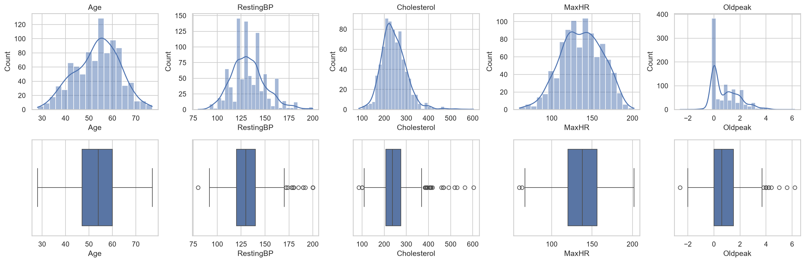
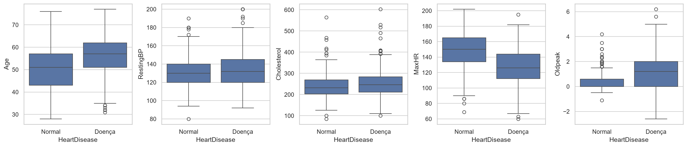
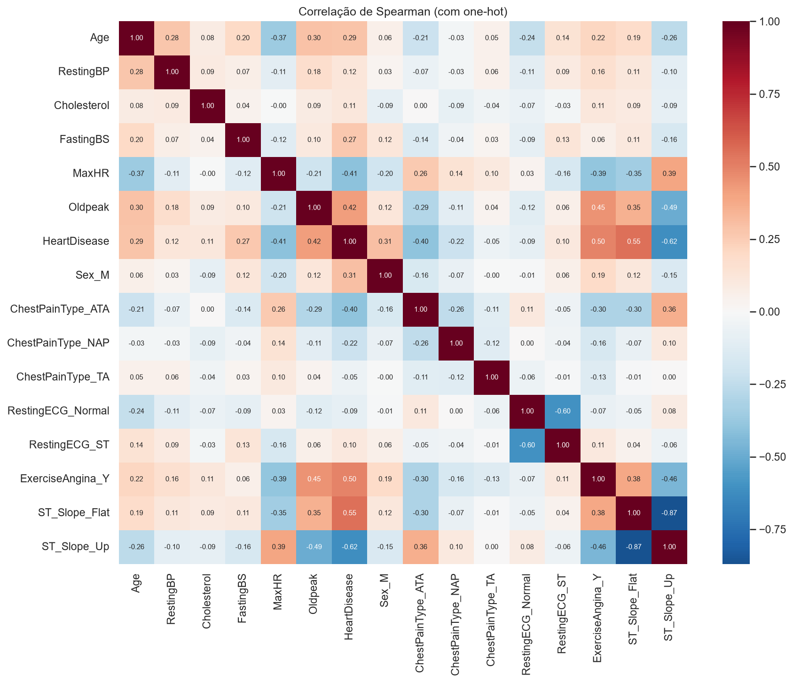
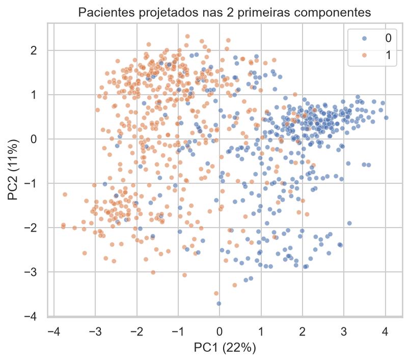
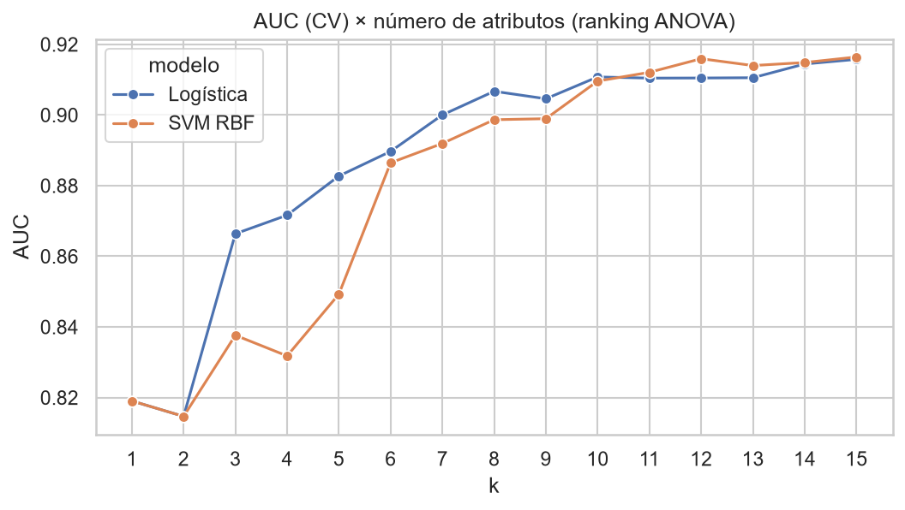
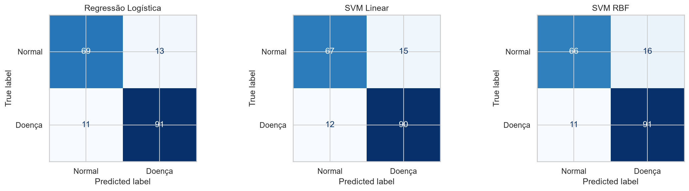
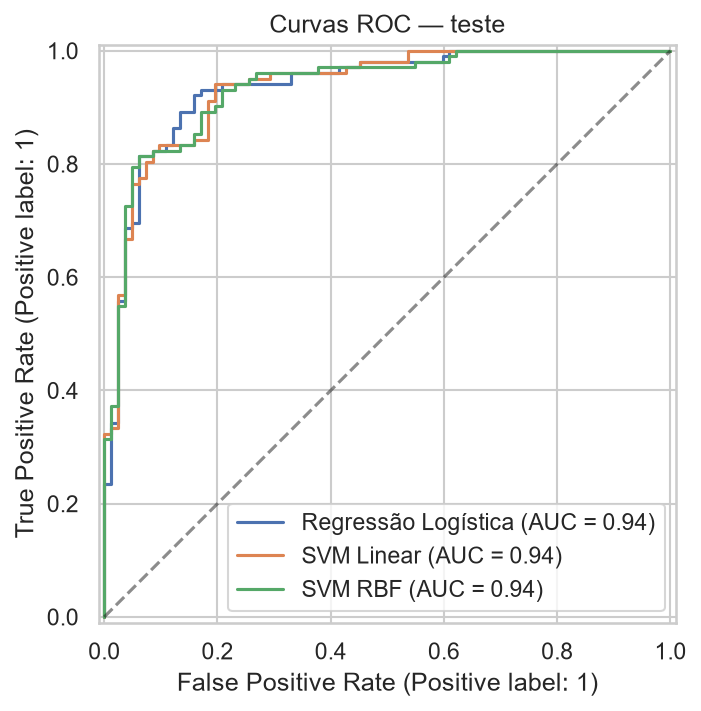

PUC-Rio
INF1038 · Trabalho 1
Base Heart Failure Prediction (Kaggle)
Aviv Cozer Aharon · 2211745
Gustavo Maia Riedel · 2210375
Outubro de 2026
A ideia do trabalho é prever se um paciente tem doença cardíaca usando exames simples. A gente escolheu a base
Heart Failure Prediction do Kaggle, que junta cinco bases antigas da UCI e tem 918 pacientes com 11 atributos:
idade, sexo, tipo de dor no peito, pressão, colesterol, glicemia, ECG em repouso e alguns dados do teste de esforço
(frequência máxima, angina no exercício, Oldpeak e inclinação do segmento ST). O alvo é
HeartDisease (1 = doente).
Achamos que valia a pena usar: não tem valores nulos nem linhas repetidas, e as classes estão bem equilibradas (508 doentes e 410 normais). O único problema sério é que 172 pacientes (19%) estão com colesterol igual a zero e um está com pressão zero, o que é impossível. Na prática isso é dado faltante.
Uma coisa curiosa: dos pacientes com colesterol zero, 88% são doentes, contra 48% no resto. Fomos ver e quase todos esses zeros vêm da base da Suíça, que não mediu colesterol e tinha muito doente. Então o zero não diz nada sobre o colesterol, só sobre de onde o paciente veio.
O que fizemos: tiramos a linha com pressão zero e trocamos os zeros de colesterol pela mediana (calculada só no
treino, dentro do pipeline). Não quisemos criar uma coluna "colesterol faltando", porque aí o modelo ia aprender
essa coincidência da coleta. Os outliers (pressão até 200, colesterol até 603) e os poucos Oldpeak
negativos fazem sentido clinicamente, então deixamos.

Nenhum atributo numérico é normal (teste de Shapiro), então usamos testes não paramétricos. Colesterol e
Oldpeak são bem assimétricos. Um ponto que limita o trabalho: 79% dos pacientes são homens.

| Atributo | V de Cramér |
|---|---|
| ST_Slope | 0,62 |
| ChestPainType | 0,54 |
| ExerciseAngina | 0,49 |
| Sex | 0,30 |
| FastingBS | 0,27 |
| RestingECG | 0,11 |
O que mais separa doente de não doente é o teste de esforço: ST plano ou descendente, angina no exercício,
Oldpeak alto e frequência máxima baixa. O que mais surpreendeu foi o tipo de dor: os pacientes
sem dor no peito são os que mais têm doença. Parece estranho, mas existe a isquemia silenciosa, e também
quem faz esses exames sem sintoma provavelmente foi mandado por outro motivo.
Pressão e colesterol deram "significativos" no teste estatístico, mas a diferença é mínima (mediana de colesterol 232 contra 246, por exemplo). Com quase mil pacientes, qualquer diferença pequena vira significativa.


Depois do one-hot ficamos com 15 atributos. As variáveis do teste de esforço são correlacionadas entre si, mas
não tem nada muito redundante (o VIF só chega perto de 5 nas duas dummies de ST_Slope). No PCA dá para
ver as duas classes quase separadas, com uma parte misturada no meio. Daí já dava para esperar duas coisas: que um
modelo linear fosse funcionar bem, e que a acurácia ficasse perto de 85%, não 99%.
Separamos 80% para treino e 20% para teste, e o teste só foi usado no final. Testamos os métodos vistos em aula: filtro (ANOVA), wrapper (RFE com Regressão Logística), embutido (Logística com L1) e PCA. Tudo foi avaliado com validação cruzada (5 folds, repetida 10 vezes).

| Método | Logística | SVM RBF |
|---|---|---|
| Todos (15) | 0,916 | 0,916 |
| Filtro ANOVA (10) | 0,913 | 0,909 |
| RFE (12) | 0,917 | 0,914 |
| L1 | 0,916 | 0,915 |
| PCA (11 comp.) | 0,912 | 0,914 |
Deu tudo praticamente igual. Com só 3 atributos já chega em 0,87 de AUC, e depois de uns 10 a curva para de subir. Como nenhum método ganhou, escolhemos pelo mais simples: os 12 do RFE, que tiram idade, pressão e colesterol. Os outros métodos também apontavam esses três como os menos úteis. O PCA ficou de fora porque não dá para interpretar as componentes.
A idade foi o caso mais interessante, porque sozinha ela é bem significativa. Só que pacientes mais velhos já têm frequência máxima menor e mais angina, então quando o teste de esforço está no modelo a idade não acrescenta nada.
Regressão Linear. Mesmo não sendo feita para isso, usando corte em 0,5 ela acertou 87,5% no teste. O problema é que 30 das 184 previsões saíram fora de [0, 1], então não dá para ler como probabilidade. Por isso ela não é a escolha certa para classificação.
Regressão Logística. Olhando os coeficientes, ser homem multiplica a chance de doença por uns 4,4, glicemia alta por 3,7 e angina no exercício por 2,3. Quem sente algum tipo de dor tem bem menos chance que o assintomático (odds ratio de 0,17). O ECG em repouso não fez diferença.
SVM. Testamos SVM linear e com kernel RBF, ajustando os parâmetros com GridSearch. Na validação cruzada os três modelos ficaram empatados (AUC entre 0,916 e 0,923). O SVM RBF escolheu um gamma bem pequeno, que deixa a fronteira quase reta, ou seja, ele mesmo "concluiu" que o problema é linear.
| Modelo | Acurácia | Recall | AUC |
|---|---|---|---|
| Regressão Logística | 0,870 | 0,892 | 0,937 |
| SVM linear | 0,853 | 0,882 | 0,936 |
| SVM RBF | 0,853 | 0,892 | 0,935 |


A Logística foi um pouco melhor, mas a diferença é de 3 pacientes, então é basicamente empate. Ficamos com ela por ser a mais simples e a mais fácil de explicar. O resultado no teste foi parecido com o da validação cruzada, então não parece ter overfitting.
Como em saúde é pior deixar passar um doente do que pedir um exame a mais, baixamos o limiar de 0,5 para 0,35. Com isso os falsos negativos caíram de 11 para 6 (recall de 89% para 94%) e a acurácia continuou em 87,5%.
Os resultados foram bons porque os dados do teste de esforço e o tipo de dor têm muita relação com a doença, e as classes são quase separáveis por uma reta. Não passou muito de 87% porque tem um grupo de pacientes (os erros do modelo) em que doentes e saudáveis têm exames parecidos. Os doentes que o modelo errou, por exemplo, tinham teste de esforço praticamente normal. Para acertar esses casos seriam precisos exames que a base não tem. Também pesa contra a base ser pequena, misturar cinco hospitais e ter quase só homens.
No fim, o que aprendemos é que nesses dados o teste de esforço diz muito mais do que colesterol, pressão ou idade, e que um modelo simples como a Regressão Logística já resolve tão bem quanto o SVM.